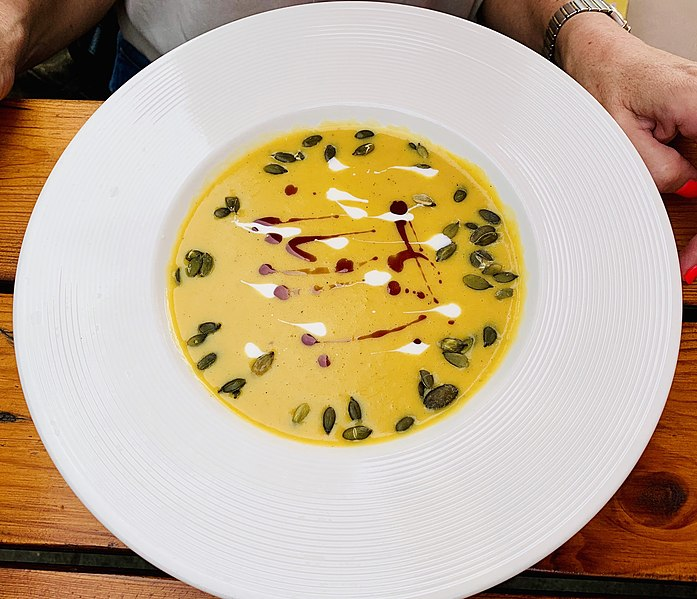

Pumpkin soup

Sample photo - Photo by Kgbo
Description
Easy and tasty Hokkaido pumpkin and vegetables soup
Ingredients
- 1/2 of a medium Hokkaido pumpkin
- 3 small carrots
- 1 small onion
- ~1,5cm of a ginger root
- 1 tablespoon of butter
- 1 broth cube / fresh bulion
- 1 standard can of a coconut milk
- 1/2 lemon
- salt, pepper, soy sauce
Steps
- Cut the pumpkin, carrots and onion. Grate the ginger.
- In a medium/large pot stew (or fry) together pumpkin, carrots, onion, ginger and butter.
- Pour bulion/ bulion made with a broth cube over the vegetables, so the liquid covers them completely.
- Boil until the vegetables are soft
- Add cocoa milk, lemon juice and other spices.
- Blend it
- Serve hot